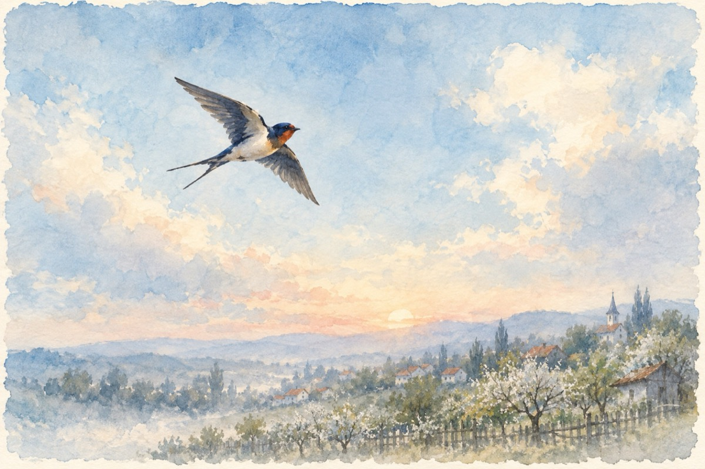

Nelu încornoratul
Și tot în sat în jos s-aude
Ileana lui Ifrim că i-a pus coarne
Ea fuge în grădină și se-ascunde
Cu un băiat mai tânăr decât ea, vezi Doamne!
Și-acum s-a dus vorba până-n zare-n sat
Purtată gură-n gură, doar de babe
Cu Nelu al Ilenei e un încornorat
Dar el e mândru de-așa snoave!
Și iese cu Ileana-n horă, jucând-a înfocat
Iar ea e mândră și voioasă cu un așa bărbat.
Dar ce nu știe el și știe-ntregul sat
Ileana se visează-n brațe la amant.
Și au ajuns și câinii de îl latră
De ce nu înțelege, doar nu e vinovat!
Iar babele își lasă focu-n vatră
Și vin la drum să-l vadă pe încornorat!
Dar cum ulciorul nu merge mult la apă
Amantu’ a părăsit-o și s-a însurat
Și-acuma-i ca o pasăre pribeagă
Că Nelu a aflat ce știa-ntregul sat!
Vasile Groza